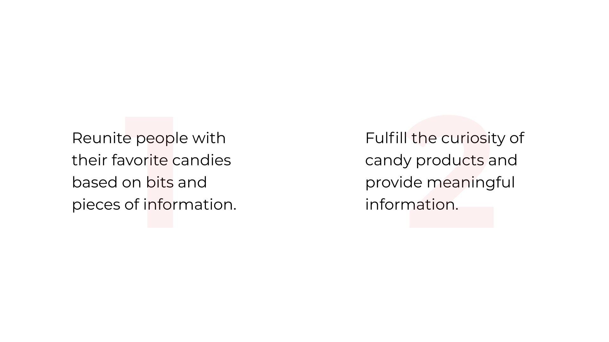
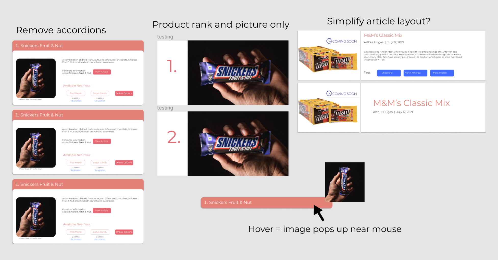
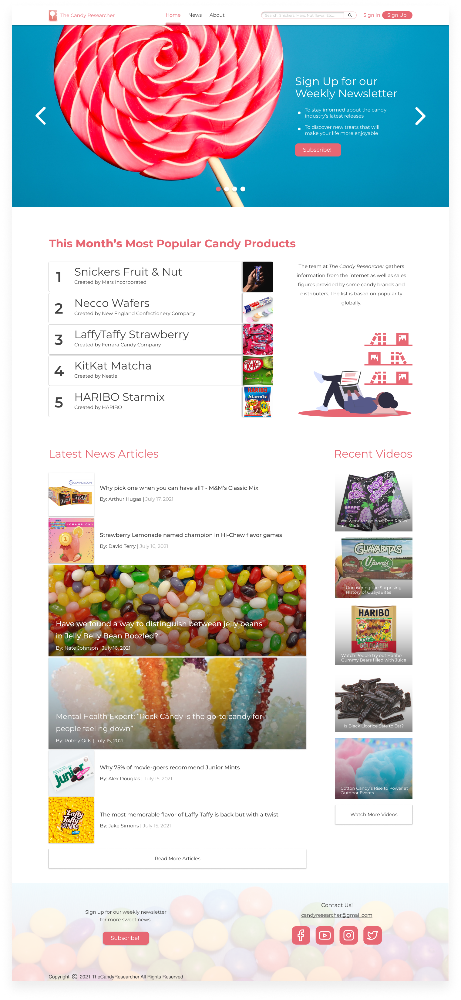
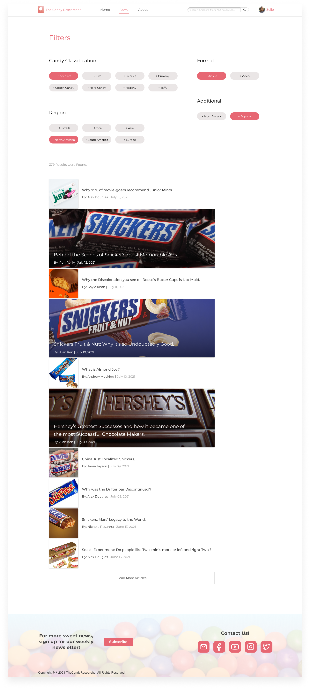
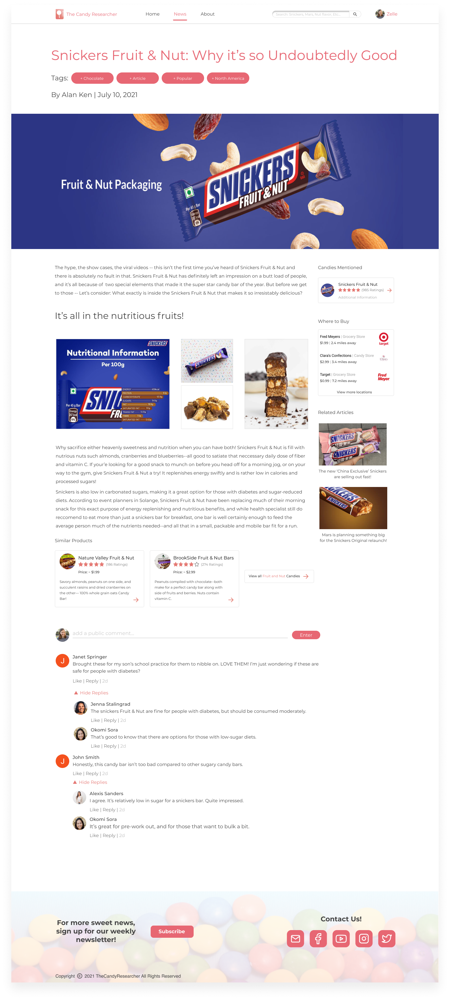
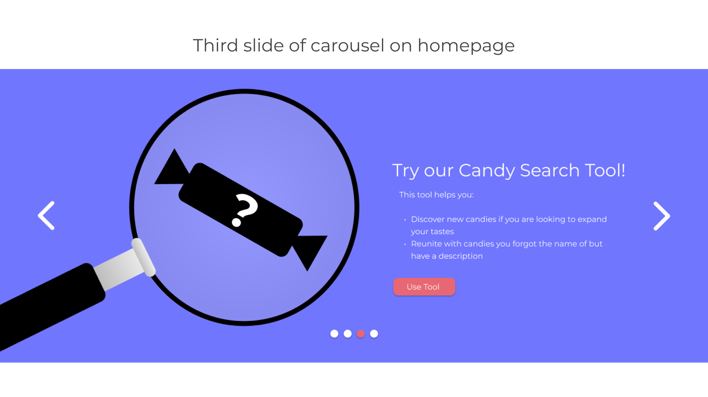
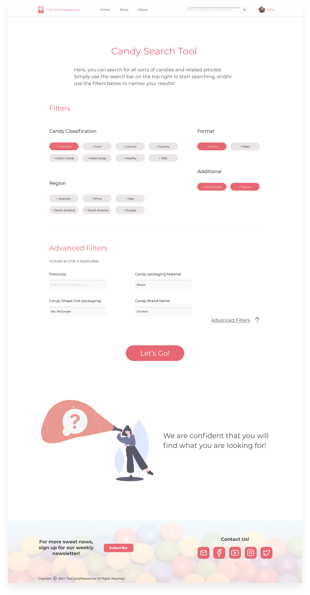
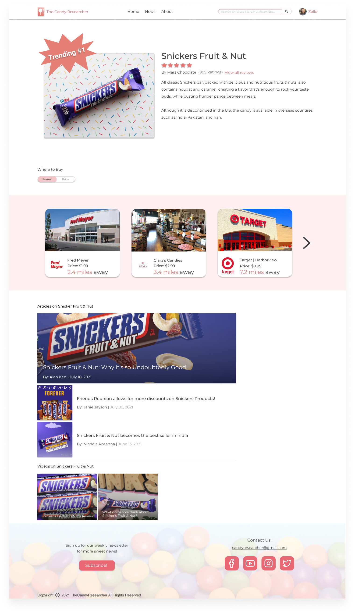
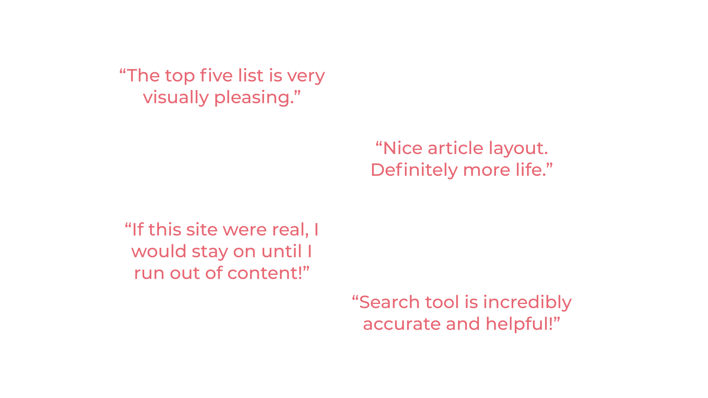
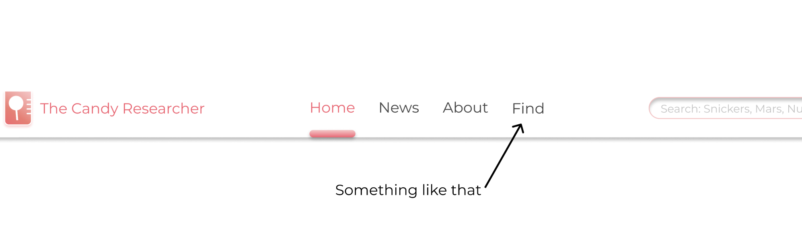

| Project type | Concept |
| Team size | 2 Members |
| Timeline | 2 months |
| Device | Desktop |
| Final product | Prototype |
My roles
Although I was heavily involved in every aspect of the project, I mainly focused on market research, user research, and prototyping.
Project objective
I visit Reddit communities a lot, especially those that deal with candies/sweets. Every time I browse through those communities, I would come across Redditors inquiring about their long lost candy product after belting out the bits and pieces of information that they do remember.
While other Redditors are just curious about their favorite candies and want more information. Sadly, those types of posts typically gain very little recognition or are ignored completely because most Redditors don't have the answers.
Seeing those posts inspired my teammate and I to create a digital product that would address the problem that those Candy-loving Redditors have.
"How might we provide Candy-loving Redditors the ability to reunite with their forgotten candy products while fulfilling their curiosity of confectionery items?"
Competitive analysis
Competitors were niche, had loyal followings, and used newsletters
Before beginning user research, I needed to assess the current market. I focused on products that provide industry news and reviews because Candy Redditors are people who are curious about new candies. I conducted SWOT analyses on three existing solutions that target a similar audience (candy-lovers). The three sites include: Candy Industry, Candy Gurus, and Confectionery News.

Candy news sites are extremely niche since they are catered to a specific audience (people who enjoy candy). This is a major weakness because larger news agencies such as Food Insider can easily overshadow these sites. Larger agencies tend to target a much broader audience with a variety of topics such as business, politics, and economy.
Candy news sites I looked at thrive because they have a loyal following. These sites use newsletters to keep people updated and to remind people that the site is still alive. Sadly, some of the sites don't feature the newsletters prominently or without a strong call to action.
75 respondents and 23 interviewees
Although I noticed a thirst for candy information and the apparent lack of answers within the candy Reddit, I have not confirmed with the community members themselves.
The first step that I took was to conduct a quick survey to get an estimate of the percentage of community members who had forgotten a candy product that they liked. I also wanted to know the percentage of members who liked learning the background behind their favorite candy products.

After the survey, we interviewed 23 people. (mostly through messaging). Although my objective was to understand more about their thirst for candy knowledge and their thoughts on the lack of attention their posts recieve on the Reddit, I was open to learning more about their motivations such as why they buy candy as well as other hindrances. Below are the summarized interview results.
Why do you buy candy?

Any other hindrances?

My design goals
After I understood more about the behaviors of candy Redditors, I created two design goals. Designing around a solid goal will ensure that we are focused and don't design things that are not needed.
Originally, my only focus was to address the first design goal. However, after seeing the percentage estimates and understanding the community members and their other painpoints, I decided to include the second design goal so it would appeal to a larger majority of the community.
Deciding on features
The product's features were determined by my design goals. Additionally, I went back through the user research to ensure that I didn't accidently omit any needs of the people who we surveyed and interviewed.

I will create a website
Now that I know what the product should do. It was time to settle on the type of product. me and my teammate considered a mobile application, a website, and even a Discord server. In the end, we decided on creating a website for its flexibility and ease of use. A website should also be responsive so it can function on various screen sizes.
Information architecture
I created a simple site map as a guide while I sketched the different pages of the site. This not only ensured that I didn't leave out any features, but also it gives me a road map of pages to create which is helpful for organizational purposes.

Sketches

Wireframes

Quick user feedback
Before I began to prototype, I wanted feedback from Candy Redditors to ensure that the site's features aligned with the user's goals as well as confirming that my design choices are user-friendly. I presented the wireframes to five Candy Redditors for their feedback. There were two design choices that they less favored compared to my other design choices.
Annoying accordions

People didn't like the accordions on the top five new releases list because they hide essential information which forced them to click and that made them annoyed. All they wanted was the name, rank, and image of the product. I understood why they felt this way because there was a lot of unnessesary information and this was on the homepage, the first page people would see when they "walk in". It makes sense that my list design may seem a bit overloaded.
Boring article layouts

People also thought that the layout of the articles on the news page made the site seem boring in that nothing seems interesting to click on. They also expressed concern about the length of the article description. After they brought that up, I can empathize with them on why they didn't want to read a paragraph description before even seeing the article itself.
Overcoming design-block with inspiration
I needed to present the top five new releases list in a space-efficient manner while somehow including the essential information. Additionally, I also needed to make a boring article layout more lively and interesting. However, after attempting various methods, I struggled to find a suitable solution and me and my teammate were stuck (design-block).
That was until I started looking at how existing products implemented their features.
A simplified list design
The reason that I used an accordion for the top five new releases list is because it was space-efficient. However, now that I know the information that the user wants (ie. the product name, rank, and image), I can simplify the list design. That is why I settled on Billboard.com's Hot 100 list because it has all the essential information that people want.

A livelier article layout
I looked at article layouts from other news sites such as The New York Times and Business Insider. However, the article layout of Eater.com resonated with me. Their layout displayed more important articles by merely making the article thumbnails larger. The layout also has no big article descriptions (because they know that no-one would read it). Instead, they opted for more descriptive article titles.

Prototype
Homepage
The first thing that candy lovers would see is the first slide of the carousel, which prompts them to sign up for a weekly newsletter. As stated in the market research section, newsletters are essentially the life blood of a niche candy site. Below the carousel is the top five new releases for the month list. Because of the width of the list, there was awkward white space on the right. Therefore, I filled it with a blurb that gave credibility to the top five list. I also used an illustration to add more visual appeal to the page and to fill up the rest of the space of course.
News page
The top portion of the news page has an assortment of tags that people can use to filter through the articles. As I have stated before, the article layout has been improved. Some article thumbnails are larger to indicate their importance as well as to generate interest and appeal.
Article page
Although the individual article page is filled up with some stand-in content, the idea is that the length of the article wouldn't be too long. Longer articles would decrease user attention. So striking that balance between detail and summary is important. I also added some cards (above the comment section) displaying the alternative (healthier) options to meet our interviewees' needs.
Candy search page
Interacting with the search bar on the navigation or the third slide of the carousel on the homepage would bring the user to the candy search tool. If users do not have an idea of the type of candy they are looking for, then they can start with using the filters to explore. If they need it, there are advanced filters that take in bits and pieces of information. This would greatly help one of my interviewees who wanted to reunite with his lost childhood candy.
 Candy product information page
There are two ways to get to the candy product information page. The first is from an article page and the other is through the candy search page. The purpose of this page is to provide users with additional information about a candy product such as, history, nearest and cheapest places to buy it from, and articles/videos where the candy was mentioned.
Usability testing
On completion of the prototype, my teammate and I conducted usability testing with several Candy Redditors and other people who like candy.
A common critique was the accessibility of the candy search tool feature. Although I had a search bar in the navigation and an entry through the third slide of the carousel, candy lovers did not feel it was enough. After discussing the critique between ourselves, I decided to implement a fourth tab on the navigation to make the doorway to the search tool more explicit.
Unfortunately, after I had addressed the common critique, life happened and the project was put on hold.
Future plans?
While I wouldn't be surprised if this concept idea would turn into a side hustle, news sites centered on candy are niche. Because of that, there is a high chance the product wouldn't gain traction at all. In terms of profit, if the site gets to a point where it starts getting noticed by many other candy lovers, the site may feature advertisements and other forms of sponsorships. Creating the content for the site will be a huge undertaking. Thus, it would be wise to outsource it to freelance writers and YouTubers. However, compensating them would be challenging since our (hypothetical) company is pretty small (and kinda broke). So for now, this project will stay as a concept idea.
The takeaway
Use inspiration to overcome design-block
A lot of the times, design-block cannot be overcame through sheer force (as in trying various design choices to see whether it works or not). But by drawing on the design choices of existing products, inspiration is generated. Thus, increasing the likelyhood of finding a solution that works. That is how I overcame design-block.